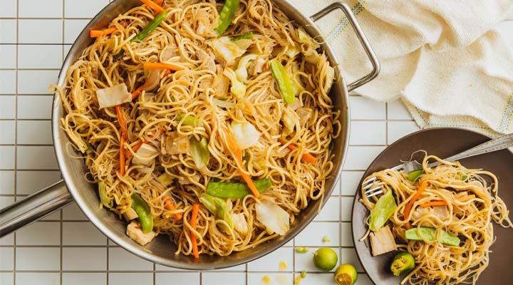

Tatak Pinoy
Pancit Canton
A Filipino stir-fried noodle dish made with wheat (canton) noodles, assorted vegetables (carrot, cabbage, sometimes green beans), slices of meat (chicken, pork or shrimp) and flavored with soy sauce and/or oyster sauce.
Ingredients
- Pancit canton noodles
- Chicken or pork (sliced)
- Shrimp (optional)
- Garlic & onion
- Carrots, cabbage, green beans
- Soy sauce
- Oyster sauce
- Chicken broth or water
- Salt & pepper
- Oil
Cooking Procedure
- Soak or rinse the canton noodles as needed, set aside.
- Heat oil in a large pan or wok; sauté minced garlic and chopped onion until fragrant.
- Add meat (e.g., chicken/pork) and cook until lightly browned. Add shrimp if using.
- Add vegetables (carrots, cabbage, etc.), stir-fry for a minute or two.
- Push ingredients to one side, add the noodles, pour a bit of broth (or water) and soy/oyster sauce; toss so noodles cook and absorb flavor, combine with veggies and meat.
- Adjust seasoning (salt/pepper/sauce) and cook until the noodles are done but still springy.
- Serve hot, garnish optionally with sliced green onions or calamansi.